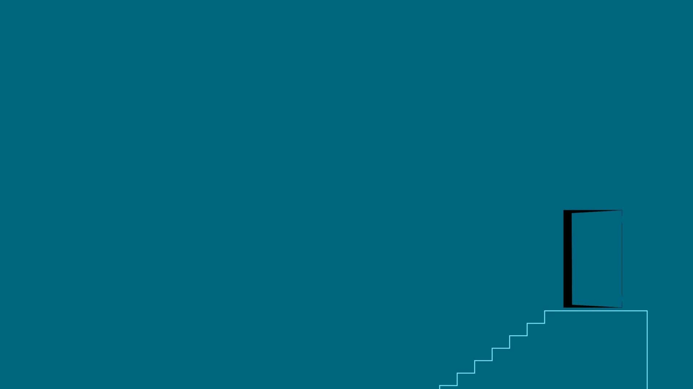
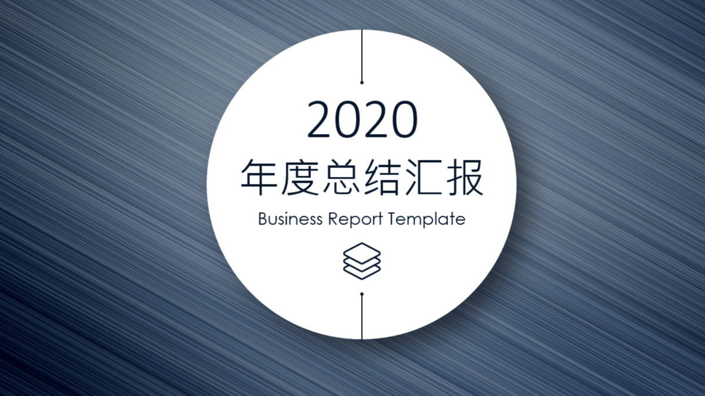
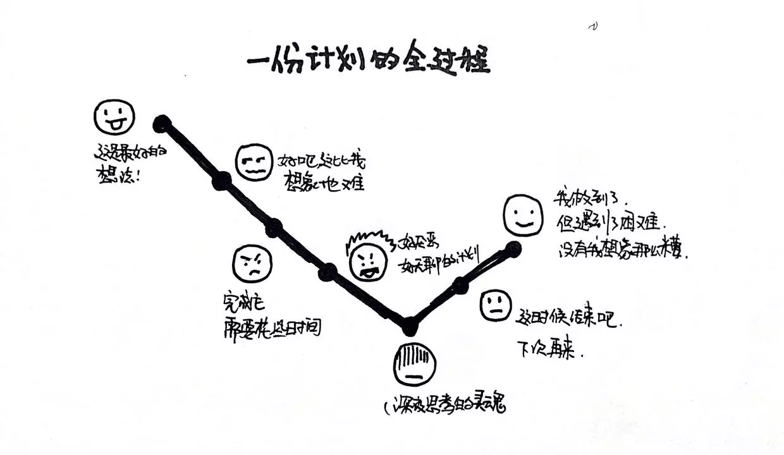

总结是为了让自己记住什么，而计划是为了让自己得到什么！
人生最宝贵的是生命，生命属于人只有一次。一个人的生命应当这样度过：当他回忆往事的时候，他不致因虚度年华而悔恨，也不致因碌碌无为而羞愧；在临死的时候，他能够说：“我的整个生命和全部精力，都已献给世界上最壮丽的事业为人类的解放而斗争。”

2020 年总结
在 2020 年需要发现自己的不足之处，以及自己的一些感悟和想法！
要抓紧时间赶快生活，因为一场莫名其妙的疾病，或者一个意外的悲惨事件，都会使生命中断。

1. 最值得记忆的时刻
💕 2020 最值得记忆的时刻 - Top3
Top 1：新冠疫情- 思考时刻: 突如其来的新冠病毒席卷全球，几乎没有人可以不受波及，直到现在还有什么地区和人，身陷囹圄之中无法得到救助。虽然生活中有很多不如意的地方，有些甚至于会让我们喘不过气，辗转难以入睡，但是毕竟只有活着才是基础。我们奔走于城市之中，为了各种目的一直在奔波，匆匆这样年复一年。我们其实忽略了很多东西，比如路上的樱花开了，父母的生日都给忘记了，等等。但是，当处于危难的时候，才会发现地位、金钱，其实都不是那么的重要了。这样的话，为什么非要等到那个时候的到来，我们才懂得这一切呢？
Top 2：大妈不在了- 思考时刻: 虽然说随着自己年龄的不断增长，很多亲人和朋友都会离我们而去，但是在我们内心世界的记忆也会不断地加重。小的时候，奶奶不在，我当时还小，虽然也是十分难受，但是对于内心的触动却仅限于孩童时期那种悲伤。逝者如斯夫，不舍昼夜。时间像流水一样不停地流逝，一去不复返，人生世事变化之快，亦有惜时之意在其中。
Top 2：我当爸爸了- 思考时刻: 哇哇哇，随着婴儿的哭泣声，我当爸爸了，感谢圆圆的付出和我父母的照顾！还记得，那一晚自己在走廊里面，踱步的一直走，等到听到平安无事的消息时，我也已经走了一万五千步了。虽然一路走来都没有什么十分操心的大事，但是心里还是不太安心，希望着平安无事。现在，终于完美收完了！咳咳咳，我相信圆圆会是一个好妈妈的，我也要努力当一个好爸爸！加油！
2. 读过最喜欢的书籍
📖 读过最喜欢的书籍 - Top 3
Top 1：《你一定爱读的极简欧洲史》- 作者名称：约翰·赫斯特
- 豆瓣评分：
8.2 - 阅读笔记：古希腊罗马文化、基督教教义以及日耳曼战士文化开篇，描述了这三大元素如何彼此强化，又相互对立，最终形塑为欧洲文明的内核；继而在诸多世纪以来催生帝国与城邦，激发征服与十字军东侵，造就出许多性格截然分明的人物——如仁慈的皇帝、好斗的教皇、侠义的骑士，乃至世上第一批享受繁荣和启蒙果实的公民。哲学思维、民主制度的渊源、政治权力的传递、甚至是医学、生物学使用拉丁文的源始，这种种欧洲因素不断形塑了现代文明的各种特质，使欧洲遥遥走在现代世界的前列。
Top 2：《从 0 到 1》- 作者名称：彼得·蒂尔/布莱克·马斯特斯
- 自我评分：
7.5 - 阅读笔记：
Paypal创始人、Facebook第一位外部投资者彼得•蒂尔在本书中详细阐述了自己的创业历程与心得，包括如何避免竞争、如何进行垄断、如何发现新的市场。《从0到1》还将带你穿越哲学、历史、经济等多元领域，解读世界运行的脉络，分享商业与未来发展的逻辑，帮助你思考从0到1的秘密，在意想不到之处发现价值与机会。
Top 3：《Flask 入门教程》- 作者名称：李辉
- 豆瓣评分：
7.0 - 阅读笔记：这是一本
Flask入门教程，提供了入门Flask所需的最少信息，你可以跟随本书自己动手开发一个简单的Watchlist程序。
3. 看过最喜欢的节目
🎬 看过最喜欢的电影/电视剧/综艺节目 - Top 3
Top 1：《我是唱作人 2》- 导演名称：车澈
- 豆瓣评分：
7.4 - 观影记录：虽然我是因为看了第二季才去找了第一季的看了下，感觉还是第二季好看一些，第一季都不知道是个啥玩意。第二季中，我改变对应
Gai的刻板印象，发现Gai唱比说得好(我对于说唱真的一点都不感冒)，霍尊对于音乐的不断尝试(在Bilibili上面介绍了每一首歌的创作背景和动机，很棒！)，张艺兴的音乐态度(也可能是节目组故意设置的，这里不做过多解析)，但是最好还是最喜欢郑钧的那几首歌，基本是可能后续会不断会听的。
Top 2：《乐队的夏天 2》- 导演名称：王雪、陈雨璇、周宗政
- 豆瓣评分：
7.4 - 观影记录：虽然总体感觉没有第一季好，但是还是被安利了不少乐队，算是茶余饭后的一点点谈资了。
4. 去过印象最深的地方
🌁 去过印象最深/最美的地方 - Top 3
Top 1：上海- 记录速写：一个人的旅行其实也有一番风味！
Top 2：宁波- 记录速写：三个人的聊天，三个人的世界，都挺好！
5. 我的思考在于自己
🎊 一句话和 2020 告别，迎接 2021！
- 🤩 最有成就感的事
- 坚持写博客和使用番茄工作法！
- 💃🏻 自己最大的进步
- 开始规划自己的生活，让生活变得多彩！
- 🌈 仍留下的遗憾
- 对于编程还是天分不足呀，难道是骨子里带来的，哈哈哈！
2021 年计划
在 2021 年需要改善的就是，如何更加实际的增长收入，以及让生活如何过的充实且有意义。
生活赋予我们的一种巨大的和无限高贵的礼品，这就是青春：充满着力量，充满着期待、志愿，充满着求知和斗争的志向，充满着希望、信心的青春。

1. 精致生活
做一些有建设性的事情，从小事开始！
精致生活，对我而言，就是可以在自己不想干的时候，就不干。想在自己干的时候，直接开始干。其实，我对自由的定义也是这样的。过的刚好，不移不正！
1.1 目标方向
开始寻找自己的目标和方向吧！
想要将一件事情变得轻松，我们就需要转化我们的观念：不要认为其实个负担，而是兴趣使然。比如，你希望小肚子不长肉，你就需要去锻炼，在跑步的时候，我们也可以欣赏周边的景色。
其实很多很多的不快乐并不是来自于金钱、地位、等等东西，而是来自于 空虚。人是一种很奇怪的动物，经过了漫长的进化，活下去变成了一件非常简单的事情。当吃饱饭不是问题的时候，人生意义的问题马上就变成了一个大问题。
而这个时代，这个社会，有很多人有空虚的问题，他/她以为自己没有。一个人为什么会不穷无尽的刷微博，一个人为什么会一直在刷抖音，一个人为什么会无聊的在电视机前看到自己屁股痛了还在看，这是为什么呢？
并不是因为你喜欢做这个事情，是你的脑子里面没有事情可以做。不是因为你喜欢这些娱乐，这些娱乐是没有建设性的，对自己没有任何好处。而且当你做完之后，会感到更大的空虚。如果一个人没有目标和方向，就会感觉空虚、寂寞和冷。
怎么办呢？就是找到自己的方向和目标。人是需要被成就感所驱动的！比如，我们之前看不懂美剧，非常非常的痛苦。后来我们从简单开始，慢慢的积累大量听，开始一点一点的可以听懂了，这就是非常高兴和愉快的事情。
1.2 如何生活
明确下 2021 年的精致生活的目标！
如何生活，对于我来说一直是一个不断变化的过程，从小时候的无忧无虑到现在的事无巨细了，很多事情和道路需要自己处理和选择。而如何过的好，就是非常重要的人生课题。
- 完成
- 意义重点
- 圆圆好美
- 三个趣事
- 三次旅行
- 三场演出
- 三首歌曲
- 减少
- 早睡早起 - 精力/充沛
- 锻炼身体 - 跳绳/跑步
- 减少每天花费在手机上的时间 - 看书/写作
- 增加
- 短期计划的实践 -
Plan - 编程能力的实践 -
Python/Docker/Kubenetes - 英语阅读和读写 -
English
- 短期计划的实践 -
1.3 年度总结
在 2021 年年底，我将总结这一年以来的收获和喜悦！
2. 快乐编程
将自己喜欢的东西变现，也是一件非常有成就感的事情！
人是一种成就感驱动的动物，如果自己喜欢做的事情，恰恰在能够给自己带来快乐的同时还能改善自己的生活，也不失为一种良好的生活方式。
2.1 现在开始
编程就是的学习方法，就是从现在开始，不要害怕错误！
从大学在实验室开始，到现在为止，前前后后也工作五六年了。虽然自己对于编程来说，并不算是那种一点就通的人，但是也是在这个行当中有了些积累和沉淀。
一直以来生活的压力，对于我而言都不是那么的让人喘不过气，或者说是过的比较轻松和随性。因为，我既不用为了买车、买房而背负房贷和车贷，也不用为了生活上开支而拼命挣钱。加之，我是那种有多大能力翻多大浪的那种人，所以从来没有向别人借过钱。生活就是，上上班，有时间了出去吃吃饭、郊郊游，时不时写写博客和自己实际用到的一些小项目，也算自娱自乐的可以。
但是，最近发现身边的朋友和同学都搞副业，有的开实体店(火锅店/小吃店)，有的炒股票和基金，有的自己接一些外包项目挣点外快，有的捣腾房产(后悔去年没买房了)，有的在搞带货，等等。
相对于搞理财来说，还是感觉自己不太适合这方面，也没有很大的精力想往这方面投入。而对于投资实体经济的话，因为疫情的原因，基本投资的同事和朋友都亏的血本无归。有的，刚刚盘下地方，装修好之后，就迎来了疫情，结果可想而知。而且投资实体店，本钱也不小，最少也需要二三十万左右才可以。
其实，说来也挺尴尬的，也是因为最近实际生活中遇到了一些事情，导致自己想搞点副业，最起码能够多点收入，而不单单只是每个月的规定工资而已。如果副业，搞的还不错的话，可以慢慢将主业取代掉，早点实现财富自由(人总是要有点最求的不是，不然和死咸鱼有啥子区别呢！)。
想来想去，当前来说，其实最适合我的还是接点外包项目，挣挣外快。一方面，可以多一分收入，多少总算有点吧；再则就是，也相当于练练手。不想干的话，就不接；有时间的话，就多接点。哈哈哈，想想其实也挺有意思的。
2.2 成就展示
明确下 2021 年的精致生活的目标！
- 个人项目
- 直播统计 -
lie-live-viewer - 任务提醒 -
point-me
- 直播统计 -
2.3 年度总结
在 2021 年年底，我将总结这一年以来的收获和喜悦！
3. 学习英语
听 > 说; 读 > 写
首先需要明确的重点就是，不要为了学习英语而学习英语，你学习英语一定是为了达到什么目的的，比如你希望英语非常流畅可以出国旅行，或者你希望阅读英文的第一手信息而非二手的中文图书和资讯。其次就是，需要对重点的东西多付出努力，对不重要的少付出努力。最后，最重要的就是，听一定是先导。
- 自学就是尽力少的降低学习成本，才能够自我驱动和高效
- 非均衡的英语学习方式 - 听力优先 - 构建听的场景 - 大量时间的积累
- 用互联网上面免费的无穷无尽的听力材料，获取大量的听力词汇，然后转换成语言词汇
我们下面所说的英语学习方法，适用于业余学习英语的朋友。想提高自己的英语水平，扩宽视野，去看更多的美剧，去获得技术相关的知识，去外国旅游和老外对话，可以做一些简单的英语写作。
练习的方法和工具
- 不要跟中国人练习
- 去外国人为主的地方练习
- 英文社区推荐
- 一定要用拼写检查软件
好的方法的要点
- 能循序渐进
- 能持续积累
3.1 前提要点
通过美剧学习英语的注意前提有哪些！
- [1] 无字幕
如何通过美剧来提高英语听力的前提，如何用舒适的英语学习方式获取最好的效果，可以把学英语当成是一种娱乐。而且看美剧要选择 无字幕 的，不然大脑会优先选择字幕这样会导致我们总是依赖于字幕，并不能学好英语。因为我们大脑会形成一种，apple -> 苹果 -> 实物 的逻辑，无字幕恰恰是消除中间这个“苹果”的关键。
很多人不看字幕就无法看懂讲得是什么，这是因为我们已经养成了这样一种学习逻辑。如果坚持下来的话，我们有一天可以通过听的方式来学习新单词、建立模型的话，那么该多高兴呢？
- [2] 学习软件
这里不推荐任何的学习软件、教材，因为都不如直接看美剧来得快。而且通过看美剧来学习英语，是通过巨大无比的听力量，所以任何一个教材都是不够的。而且边看边查单词的方式也是非常不好的，很容易打断我们，无法建立起一个好的练习以及及时的反应。听力量不够，大脑里面就无法建立好良好的连接。
- [3] 选择美剧
选择美剧也是很重要的！我们一开始通过美剧来学习英语，要选择适合自己的。即跟我们现在英语水平差不多，但是比我们的水平高那么一点点，最好是可以无障碍的听懂 80% 左右。剩下的这 20% 的生词，基本不会妨碍我们对于剧情的理解，让我们通过语境来理解新单词。而能听懂的这 80% 可以使我们在看剧的时候不丧失娱乐性。
如果我们之前都是没有什么基础的话，可以选择面向少儿的动画片来逐渐建立起语感和语义，比如《小猪佩奇》之类的剧。如果我们有一定的基础的话，可以看看《生活大爆炸》之类的剧。如果我们是从事医疗相关的工具，可以看看《豪斯医生》之类的剧。
还有就是选剧的时候，要找我们感兴趣的美剧。比如你喜欢推理，那就看看推理相关的美剧；你喜欢中二的内容，可以看看漫画之类的剧集。这是你的娱乐，并不是一件痛苦的事情。
- [4] 不学音标
明确了目的之后，我们是为了提高英语交流的能力之后，学习音标就变得非常不重要了。我们不必为了学习这个单词怎么发音而学习音乐，可以使用手机或者电脑的翻译软件来给我们朗读，即可。
我们需要做的是，当看到这个单词的时候直接直到应该怎么读，而非走音标这个中转站，这才是最快的方式。所以，音标和语法在一定程度上面来说加之不是很大。
3.2 操作步骤
具体列出学习的步骤和相关推荐内容！
这里推荐美剧，主要是因为其针对特定场景的，这样我们可以长时间练习同一领域内的知识。比如一个医疗类美剧，通常都会有很多季，而每季都会有十二集左右，这样你就可以长时间的了解医疗相关的词汇以及地道的表达。而电影就非常难达到了，同一个电影看五遍，真的不是一个明智的选择。
- [1] 美剧 - 听 > 说
- 小猪佩奇
- 老友记
- 生活大爆炸
- 无耻之徒
- 别对我撒谎
- 豪斯医生
- 西部世界
当你用美剧建立起一个比较好的听力能力的时候，你就可以考虑听一听 Podcast。Podcast 和美剧或电影的区别在于，单词密度。因为美剧或电影都要大量的留白的场景描写，然而任务也不是每时每刻都在对话，所以比如一个小时的美剧可能只有十几分钟是有用的。虽然单词密度很低，但是其对于我们来说听起来很轻松。
- [2] Podcast - 听 > 说
YouTubeTechLeadTalks At GoogleTEDPyCon YearThe Stack Overflow Podcast
其实一开始并不需要对词汇的拼写特别在意，只要我们通过大量的听力和阅读，对这个词在脑子中有记录，你就可以用说的方式把它写出来。写出来的时候有错误，可以使用拼写软件帮助我们纠正对应的错误。改对了之后，再去建立这个词、词型和对应的拼写，这样的效率比死记硬背好太多了，而且可以有的放矢。
- [3] Book - 读 > 写
- 美区
Kindle首选 - 斯坦福大学公开课
- 英文相关的技术书籍
- 美区
3.3 相关资料
如何构建循序渐进的英语写作学习体系！
网站
- Quora - 英文问答社区
- Reddit - 全世界最大的英文论坛
- Stackoverflow - 英文技术问答社区
工具
- ContentSamurai - 根据英文提纲生成视频
- Grammarly - 英文拼写检查工具
书籍
- On the Art of Writing - 英文写作书
3.4 年度总结
在 2021 年年底，我将总结这一年以来的收获和喜悦！